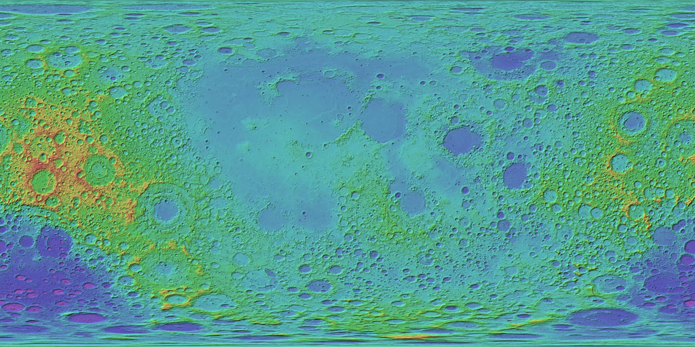
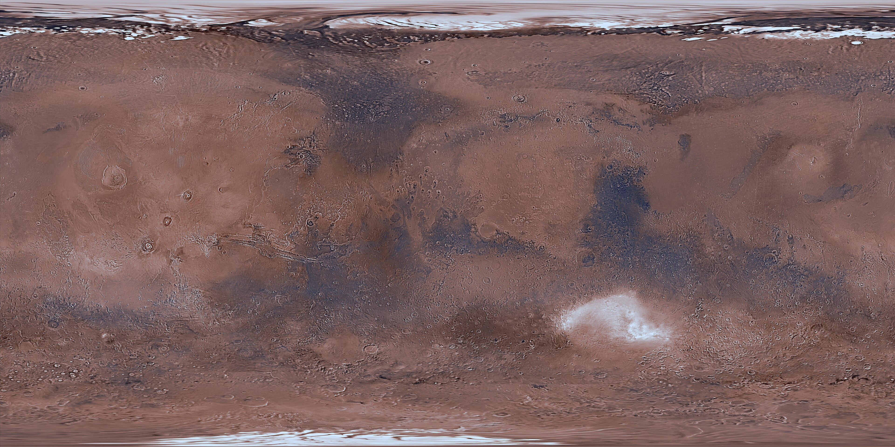

Sixteen missions. Two worlds. Every stage, rover, heat shield and footpad that humanity ever left behind — where it was abandoned, how it ended, and the exact coordinates where it still lies today.
A landing is really a slow-motion act of abandonment. First the fairing falls away, then the boosters, then the heat shield, the parachute, the backshell, the descent stage — until the machine that survives is only a fraction of the machine that launched.
This exhibit follows each mission from the launch pad to its final resting place: click through the five phases of every journey, click any part of the vehicle to learn its fate, and read the coordinates where it still sits — on the Sea of Tranquility, in Gusev Crater, on the plains of Meridiani.
drag sideways — click a mission to jump to its story
Every marker is a real, catalogued resting place. Click one to revisit its mission.


You are stranded at a landing site and nobody is coming. Everything humanity ever abandoned is still lying around you — solar arrays, radios, dishes, batteries. Scavenge the wreckage, wire up a transmitter, and get a signal home.
Every mission in the exhibit, twice over: the launch pad and the final movement — touchdown, lunar liftoff, splashdown or last transmission. All 32 clips are hosted on YouTube; every card names its channel and links to the original.
Clips are played from YouTube and remain the property of their channels — use the ↗ link on any card to open the original upload.